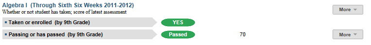
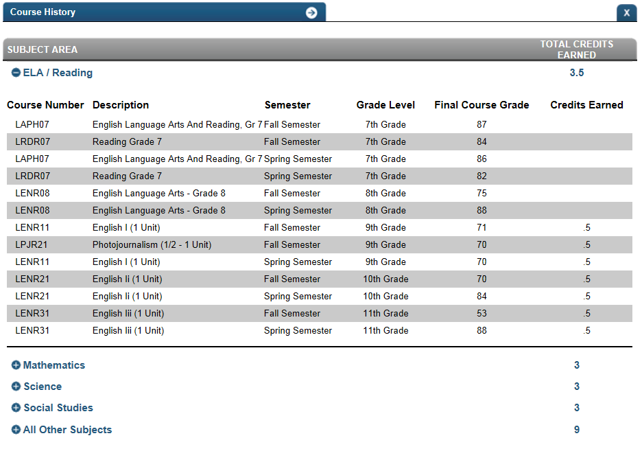
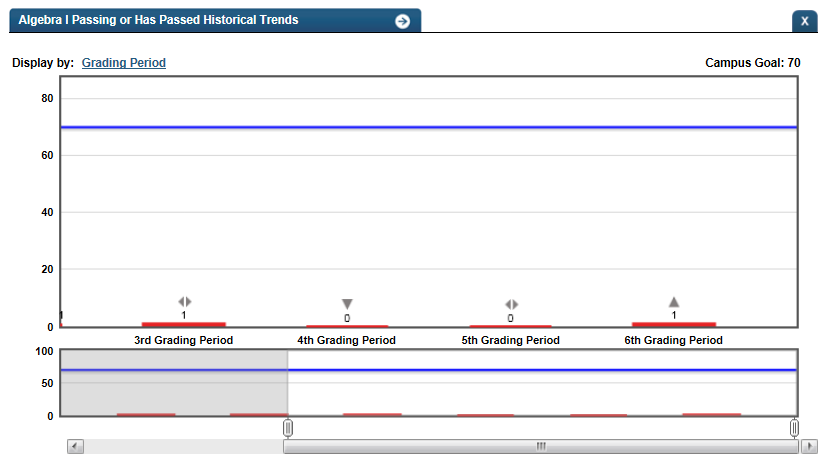

Dashboard Metrics


Algebra I
Background
Student Dashboard Metrics
Because of the importance of Algebra I as the foundation for advanced math attainment, many school districts, including Oakland and several districts in Texas, have incorporated metrics on Algebra completion into their internal performance management dashboards. In focus group discussions conducted with educators, the Algebra I metric, as presented on screen shots of the student dashboard, was considered useful by only 89% of respondents. This represents a significantly lower usefulness rating than those for other Academic Progress metrics, indicating the potential need for additional training on the importance of Algebra I as a predictor of long-term student success.
Primary Metric
- Algebra I: reports whether or not a student is currently taking or has taken and passed Algebra I in a prior year, and if so, their most recent or final grade in the course.
Related Metric
None.
User Interface
Dashboard Example
Figure 1 shows the Algebra I metric as seen on the student dashboard.

Figure 1 Ed-Fi Algebra 1 Metric
For the student who
- is currently taking Algebra I, displays the passing or failing grade
- previously took Algebra I, displays their final passing or failing grade from the course transcript
- is currently taking an upper level mathematics course other than Algebra I (no mention of Algebra I on the course transcript), the Ed-Fi dashboards assume that the student has taken and passed Algebra I
Status Definition
The Status indicator for the first sub-metric is determined by whether or not the student's transcript or grade for current grading period indicates that the student has taken Algebra or is currently taking Algebra I. For the second sub-metric, the Status indicator is determined by the student's most recent grade in Algebra I.
The recommended default thresholds for failing a course are:
- Letter grade is below C
- Numeric grade is less than 70
Metric Indicator | Trend Comparisons | |||
Metric Name | Sub-metric Name | Metric Status Indicator | Compares: | To: |
Algebra I | Taken or enrolled by 8th grade | Red (No) = If Algebra I has not been taken by the 8th Grade for Middle School students and by 9th Grade for High School Students Green (Yes) = If Algebra I has been taken by the 8th Grade for Middle School students and by 9th Grade for High School Students | N/A | N/A |
Passing or has passed by 8th grade | Red (No) = If FinalLetterGrade, FinalNumericGrade LetterGradeEarned, NumericGradeEarned is less than C or 70 Green (Yes) = If FinalLetterGrade, FinalNumericGrade LetterGradeEarned, NumericGradeEarned is equal to or greater than C or 70 OR CourseName = Algebra II or higher | Current grading period | Prior grading period | |
(a) For middle school, if Algebra I has not been taken in 7th and 8th grade, the Status column displays "No", but is not red.
Metric Indicators | Trend Comparisons | |||
Metric Name | Sub-metric Name | Metric Status Indicator (a) | Compares: | To: |
Algebra I | Taken or enrolled (by grade level) | Red (No) = If Algebra I has not been taken Green (Yes) = If Algebra I has been taken | N/A | N/A |
Passing or has passed | Red (No) = If grade is less than 70% or C Green (Yes) = If grade is equal to or greater than 70% or C (if currently enrolled) OR has received one full credit (if taken) OR Course Name = Algebra II or higher | Current grading period | Prior grading period | |
(a) For middle school, if Algebra I has not been taken in 7th and 8th grade, the Status column displays "No", but is not red.
Trend Definition
The trend indicator shows progress of a student compared to a prior grading period. It is applicable only if the student is currently taking Algebra I and shows progress of the student compared to a prior grading period within the school year.
Trend Indicators: Objective is to indicate Passing Algebra 1 | |||
| Up green | > 5 percentage points lower OR one letter grade higher | |
| Unchanged | Same letter grade | |
| Down red | > 5 percentage points higher OR one or more letter grades lower | |
The trend does not display if the student is in the first grading period since data is not available.
Periodicity
Recommended Load Characteristics | |
Calendar | Throughout the school year |
Frequency of data load | Grading Period |
Latency | Grading Period |
Interchange schema | Interchange-StudentGrade.xsd |
Tooltips
The standard tool tips for the Algebra I metric definition, column headers, and help functions display for this metric.
The following are tooltips specific to the Algebra I metric:
 is ‘No change from the prior period’
is ‘No change from the prior period’ is ‘Getting worse from the prior period’
is ‘Getting worse from the prior period’ is ‘Getting better from the prior period ’
is ‘Getting better from the prior period ’
Business Rules
The Algebra I metric displays two sub-metrics, each with specific business rules, as described below.
Whether or not a student has taken or is currently taking Algebra I
Indicates whether the student is currently taking or has taken Algebra I. The data to compute this metric is taken from the student transcript or from their list of current courses. Algebra I can be defined by either a state course code or a locally-defined course code.
If the Algebra I course code does not appear on a student’s transcript and the student is currently taking the next course in the mathematics sequence (e.g., Algebra II or higher), the Ed-Fi dashboards assumed the student passed Algebra I. Missing course codes could be due to the following cases:
- Many 9th grade students do not have 8th grade course information on their transcripts.
- For Middle School, if Algebra I is not taken by the 8th grade, the status displays as NA, and does not have a red indicator.
- Students who are transferring in during the school year may not have transcripts transferred and/or logged in the campus system.
Whether or not the student is passing or has passed Algebra I
Indicates whether or not the student previously passed or is passing Algebra I. For business rules, if the student
- has never taken Algebra I, no value is computed.
- is currently taking Algebra I the current grading period grade is displayed.
- has taken and failed Algebra I and is not currently taking Algebra I, the grade status from the student transcript is used to compute the metric.
- does not have Algebra I in their course transcript and is currently taking a higher level math class; the Ed-Fi dashboards assume that the student has already passed Algebra I.
The grading period is configurable and is defined by the district – typically either 6 or 9 weeks.
Data Assumptions
- Student course information is available through the student transcript
- Student grade information is available through the grade
- Course grades are numeric or letter-based
- District sets the value that drives the student thresholds (numeric and/or letter grade)
Computed Values
Table 5 defines how values are calculated. The result of the calculation displays in the Value column on the student dashboard.
Metric Values | |
Passed | Student has earned 1 full credit or is enrolled in Algebra II or higher by 9th grade |
Passing | Student's numeric score for the current grading period is greater than or equal to 70 (C) |
Data Anomalies
Best practice is to footnote these anomalies:
- Loading of data from each grading period
- Late enrollees may not have previous grading period grades from another school
- Missing transcripts for transfer students.
- The dashboards do not currently read in some versions of Algebra I including purely local course codes and modified versions of the course. These students may appear as having not taken the course if they took a version outside of the norm.
- Students that are enrolled in Algebra II or higher are assumed to have taken Algebra I as it is a pre-requisite. Geometry might be taken concurrently so the same is not assumed in this case.
- Until the first grading period grades are logged, the difference between the numerator of the currently enrolled/previously enrolled and the denominator of passing/passed for the 9th grade will be the number of students who are currently enrolled. Once the grades are logged for the first grading period the numerator of taking/taken will match the denominator of passing/passed.
Footnotes
Footnotes are used to provide addition data information concerning the metric. Footnotes are sequential for the entire page. Therefore, a metric's footnote may not begin with the number 1.
The following footnotes appear below the metric:
- Students currently taking Algebra I who have transferred and have not been present for a full grading period should be noted by a designated icon.
- Label the last semester credits were loaded into the transcript
- Label the last grading period for which grades are loaded
Date of Refresh
Best practice is for the date of last data refresh to appear next the metric in the following format:
- (Through Second Six Weeks)
Implementation Considerations
Student Identity
Maintaining a correct and consistent student identity is at the center of any education data system. Most systems use some sort of unique identifier. However, sometimes this identifier is entered incorrectly or sometimes different systems use different identifiers.
The UDM XML supports the interchange of multiple types of identifiers. The StudentReference is a complex type within the UDM to maintain the referential integrity of the student (that is, ensuring that the data associated with each student is accurately associated with the right student). The complex type of the student reference assists with implementing the accurate matching algorithm to identify a student by utilizing any of the individual attributes (e.g., Student Unique State ID, Student ID, Campus Local ID (with Campus ID), Name and Birth Date). For example, if the Student Unique State ID is unknown, you can find the student’s identity by their Student ID, First Name, Last Name and Birth Date.
Local Algebra I Courses
If the district offers locally-defined courses that are considered equivalent to Algebra I, this metric needs to account for these additional course codes.
Missing Transcript Information
If the student does not have Algebra I in their course transcript and is currently taking a higher level math class, the Ed-Fi dashboards assume that the student has already passed Algebra I.
Numeric or Letter Grading System
Best practice is for the metric to support both numeric and letter grading systems.
Late Enrollments
For late enrollment students, consider whether or not there may be missing grading periods of data to compare to the latest grading period.
Current Grading Period
Data for the current grading period must exist for the Algebra I metric to exist.
Drill Downs
Drill Down View
The dashboards include the option to drill down and see more detail that is associated with a metric. Table 6 lists the drill down views that are recommended for this metric.
| Courses | Student's academic course history and currently enrolled course list | |
| Historical | If the student is currently enrolled in Algebra I, comparison across grading periods |
Description
This drill down displays a student’s current and historical course information. This information enables educators to see prior mathematics course history including whether or not the student has taken Algebra I and failed the course.

Figure 2 Ed-Fi Algebra 1 Metric Course History
Figure 3 shows the Historical detail for Algebra I passing as shown in the Ed-Fi dashboards.

Figure 3 Ed-Fi Historical Algebra I Passing